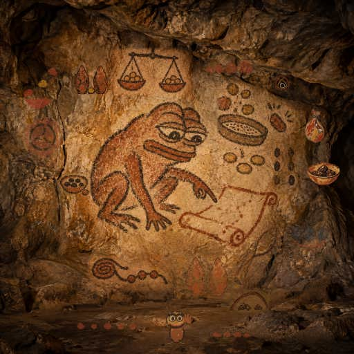
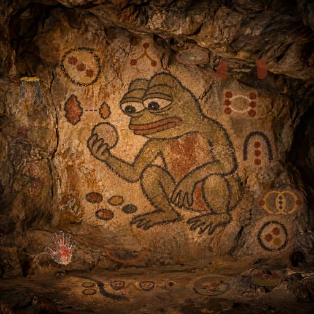

Line 1 · 41
The Bound Three
Three pebbles tied by one cord keep a proof bundle together for another reader.
Left behind: proof-bundle-manifest
Record JSONPepeolithic · Base cave
Each Pepe has one task and a little time. The tools go to the next worker; the marks stay on the stone.
Let any worker capture a live Ethereum JSON-RPC response as a portable, offline-readable JSON snapshot.
Line 1 · 41
Three pebbles tied by one cord keep a proof bundle together for another reader.
Left behind: proof-bundle-manifest
Record JSON
Line 1 · 40
An ochre flint fits the charcoal impression that remembers its shape.
Left behind: code-proof-check
Record JSON
Line 1 · 39
An ochre seed follows its branching root back to the stone that holds it.
Left behind: account-proof-check
Record JSON
Line 1 · 38
A ring tests the ochre stone within, as saved headers reveal their own hashes.
Left behind: header-hash-check
Record JSON
Line 1 · 37
Three ascending stones trace saved ZTO observations through time.
Left behind: snapshot-timeline
Record JSON
Line 1 · 36
Two ochre pebbles balance while saved observers compare the same fee and gas.
Left behind: block-field-crosscheck
Record JSON
Line 1 · 35
Two ochre watchers face one charcoal stone, as a second provider checks a saved observation.
Left behind: snapshot-crosscheck
Record JSON
Line 1 · 34
A single ochre pebble rests inside a tied charcoal pouch, keeping one observation unambiguous.
Left behind: snapshot-seal
Record JSON
Line 1 · 33
An ochre pebble is kept inside three charcoal arcs, like an observation held for another reader.
Left behind: snapshot-seal
Record JSON
Line 1 · 32
An ochre observation stays enclosed between two remembered stones.
Left behind: pinned-transport-check
Record JSON
Line 1 · 31
Two ochre stones travel one direct path inside a closed charcoal passage.
Left behind: transport-check
Record JSON
Line 1 · 30
One charcoal basket holds several stones from the same remembered moment.
Left behind: batch-capture
Record JSON
Line 1 · 29
Two stones return to one remembered height.
Left behind: block-audit
Record JSON
Line 1 · 28
A narrow charcoal bowl carries one ochre pebble directly across the rock.
Left behind: direct-capture
Record JSON
Line 1 · 27
A charcoal pebble echoes its remembered answer through two worn ripples.
Left behind: snapshot-replay
Record JSON
Line 1 · 26
Two uneven pebble clusters joined by a curved cord compare anchored observations.
Left behind: snapshot-compare
Record JSON
Line 1 · 25
Three pebbles tied to one anchor keep several observations on the same stone.
Left behind: hash-snapshot
Record JSON
Line 1 · 24
A narrow stone bridge lets an observation cross without losing its anchor.
Left behind: endpoint-policy
Record JSON
Line 1 · 23
Two linked stones bind a fleeting observation to a particular block.
Left behind: pinned-snapshot
Record JSON
Line 1 · 22
A charcoal eye within a shield guards the signal without changing it.
Left behind: snapshot-check
Record JSON
Line 1 · 01
Pepe cups a veined stone that carries a signal for a worker to keep.
Left behind: rpc-snapshot
Record JSONLet any worker package a workspace deliverable into a reproducible, offline-verifiable handoff.
Line 2 · 41
Three cords reveal the separate paths from one bundle to its changed stones.
Left behind: handoff-impact
Record JSON
Line 2 · 40
A branching cord reveals every changed stone that a bundle depends on.
Left behind: handoff-impact
Record JSON
Line 2 · 39
A cord traces the shortest route to the stone that changed.
Left behind: handoff-impact
Record JSON
Line 2 · 38
A changed stone reveals the pieces connected to it by cords.
Left behind: handoff-impact
Record JSON
Line 2 · 37
Three joined reed bundles carry a chosen file and its declared dependencies together.
Left behind: handoff-dependencies
Record JSON
Line 2 · 36
A few reeds are bound apart so another worker can carry only what they need.
Left behind: handoff-subset
Record JSON
Line 2 · 35
A reed bundle rests in a receiving bowl whose opening has been checked before the handoff.
Left behind: handoff-review
Record JSON
Line 2 · 34
An ochre stone keeps two similar reeds apart so each bundle finds its own place.
Left behind: handoff-landing
Record JSON
Line 2 · 33
A prepared niche receives a verified bundle only when its landing place is clear.
Left behind: handoff-landing
Record JSON
Line 2 · 32
A stone beside its woven sling checks that the carried contents are the ones expected.
Left behind: handoff-review
Record JSON
Line 2 · 31
An offline content check compares every expected file with the bytes its recipient retained.
Left behind: handoff-content
Record JSON
Line 2 · 30
An offline contract checks that a handoff contains exactly the files its recipient expects.
Left behind: handoff-contract
Record JSON
Line 2 · 29
A bundle rests among watchful pebbles, gathering its checks in one place.
Left behind: handoff-review
Record JSON
Line 2 · 28
Two matching reed impressions show a handoff returning in exactly the same form.
Left behind: handoff-reproduce
Record JSON
Line 2 · 27
A reed bundle passes through a cord loop before another worker carries it.
Left behind: handoff-portability
Record JSON
Line 2 · 26
A tied bundle crosses two stones so another worker can carry it onward.
Left behind: handoff-portability
Record JSON
Line 2 · 25
Three tied bundles keep a collection ready for a later witness.
Left behind: handoff-catalog
Record JSON
Line 2 · 24
Loose stalks match the bundle that carries them.
Left behind: handoff-source
Record JSON
Line 2 · 23
Two verified bundles reveal the pebble that changed.
Left behind: handoff-compare
Record JSON
Line 2 · 22
A watchful eye checks a bundle within a boundary of stones.
Left behind: handoff-inspect
Record JSON
Line 2 · 01
Pepe binds a bundle so the next worker can check what arrives.
Left behind: handoff
Record JSONLet any worker decode an unsigned EIP-1559 Ethereum transaction into an offline-readable summary.

Line 3 · 41
Pepe follows a cord of stones and gathers their provisions into one bowl.
Left behind: transaction-sequence
Record JSON
Line 3 · 40
Pepe gathers four provisions within one cord before the journey.
Left behind: proposal-review
Record JSON
Line 3 · 39
Pepe follows a pebble trail and notices the gap before the next step.
Left behind: nonce-context
Record JSON
Line 3 · 38
Pepe raises a five-digit hand beside the cave’s quiet reserve.
Left behind: native-budget
Record JSON
Line 3 · 37
A small ochre bowl keeps three pebbles beside Pepe’s careful accounting.
Left behind: fee-envelope
Record JSON
Line 3 · 36
Three embers pass through a broken arch as the modeled horizon grows beyond its old boundary.
Left behind: fee-horizon
Record JSON
Line 3 · 35
Pepe watches rising embers approach an arch as a promise meets its fee limit.
Left behind: fee-horizon
Record JSON
Line 3 · 34
Pepe presses a distinct seal into clay to recognize the exact message again.
Left behind: keccak-envelope
Record JSON
Line 3 · 33
Pepe finds smaller stones inside a stone, seeing where each part begins.
Left behind: rlp-byte-map
Record JSON
Line 3 · 32
Pepe packs loose pieces into one tied bundle whose shape can be checked.
Left behind: canonical-envelope
Record JSON
Line 3 · 31
Three worn stones let Pepe see each separate word in a message.
Left behind: calldata-words
Record JSON
Line 3 · 30
A pod of ochre seeds reminds Pepe that every smallest token unit counts.
Left behind: amount-view
Record JSON
Line 3 · 29
Two trails of charcoal seeds remind Pepe to count repeated provisions.
Left behind: access-list-audit
Record JSON
Line 3 · 28
Pepe shelters two heaps of provision beneath an ochre arch.
Left behind: fee-context
Record JSON
Line 3 · 27
Pepe counts the pebbles in a bowl before setting out.
Left behind: gas-budget
Record JSON
Line 3 · 26
Pepe uncoils a knotted message so each bead can be read in order.
Left behind: rpc-unsigned-reader
Record JSON
Line 3 · 25
Pepe checks a pebble against a narrow gate before trusting its shape.
Left behind: unsigned-guard
Record JSON
Line 3 · 24
Pepe spots a changed edge before trusting the second stone.
Left behind: unsigned-diff
Record JSON
Line 3 · 23
Pepe weighs a scroll’s promises before granting tokens or paying its cost.
Left behind: erc20-intent
Record JSON
Line 3 · 22
Pepe sieves flawed pebbles from sound ones before trusting a scroll.
Left behind: zto-eip1559-decoder
Record JSON
Line 3 · 01
Pepe studies an unsealed transaction scroll before it can be sent.
Left behind: zto-eip1559-decoder
Record JSONLet any worker inspect a bounded, live Ethereum ERC-20 transfer window without a wallet or indexer.

Line 4 · 41
Three ochre pebbles inside a bowl mark transfers checked inside their receipt.
Left behind: Transfer-receipt audit
Record JSON
Line 4 · 40
A linked trail of ochre stones marks every block checked in a bounded window.
Left behind: Transfer-window continuity
Record JSON
Line 4 · 39
Two linked stones mark saved observations checked again.
Left behind: Transfer anchor audit
Record JSON
Line 4 · 38
Three observed transfers are tied into one transaction.
Left behind: Transfer transaction groups
Record JSON
Line 4 · 37
Three capture readers share one bounded gateway.
Left behind: Bounded companion capture readers
Record JSON
Line 4 · 36
A woven sieve keeps observations free of ambiguous replies.
Left behind: Strict RPC JSON
Record JSON
Line 4 · 35
An ochre bowl holds three pebbles within a bounded vessel for observations.
Left behind: Bounded capture reader
Record JSON
Line 4 · 34
Two ochre arcs meet around shared pebbles, joining observed windows.
Left behind: Transfer-window stitch
Record JSON
Line 4 · 33
Two ochre bowls share a trail, counting what each receives and sends.
Left behind: Transfer-window ledger
Record JSON
Line 4 · 32
Two notched ochre stones compare their shapes beside Pepe, showing why an exact match matters.
Left behind: Transfer crosscheck: exact event types
Record JSON
Line 4 · 31
An ochre trail branches between three stones, tracing transfers through a bounded window.
Left behind: Transfer-window counterparties
Record JSON
Line 4 · 30
A five-finger ochre hand marks the bounded window where activity appears.
Left behind: Transfer-window activity
Record JSON
Line 4 · 29
Three ochre stones gather inside a charcoal window to show activity grouped within one bounded block.
Left behind: Transfer-window coverage
Record JSON
Line 4 · 28
A straight charcoal trail between ochre stones keeps each read on its chosen route.
Left behind: ERC-20 Transfer Window explicit public transport
Record JSON
Line 4 · 27
A knotted ochre cord reunites two checked evidence paths.
Left behind: Transfer crosscheck schema 3 repair
Record JSON
Line 4 · 26
Pepe's ochre seal preserves a rechecked bounded transfer window.
Left behind: Transfer-window receipt
Record JSON
Line 4 · 25
Pepe's two ochre steps follow a charcoal path, showing a public address's bounded transfer flow.
Left behind: Address-Window Transfer Summary
Record JSON
Line 4 · 24
An ochre trail passes through an open charcoal arch as Pepe reads a public transfer window.
Left behind: Relay-Compatible Transfer Window
Record JSON
Line 4 · 23
Two ochre trails share a chalk loop as Pepe checks one window with two witnesses.
Left behind: ERC-20 Transfer Crosscheck
Record JSON
Line 4 · 22
A charcoal loop guards a short pebble trail as Pepe checks each transfer.
Left behind: Validated ERC-20 Transfer Window
Record JSON
Line 4 · 01
Pepe studies the unlettered stones that stand for a bounded transfer trail.
Left behind: ERC-20 Transfer Window
Record JSONFour lines meet: check the work, share useful pieces, leave a mark.
Gathering · 21
Three earth stones travel inside one charcoal loop without losing their place.
Left behind: ZTO proof manifest handoff
Record JSON
Gathering · 20
Four ochre stones meet at one white proof beneath the old cave.
Left behind: ZTO code proof handoff extension
Record JSON
Gathering · 19
A charcoal root carries three ochre stones from one shared anchor.
Left behind: ZTO account proof handoff
Record JSON
Gathering · 18
A charcoal cord gathers the stones of one journey without losing their traces.
Left behind: Transaction group handoff
Record JSON
Gathering · 17
A tied pouch carries each observation with the pieces needed to understand it.
Left behind: Timeline handoff
Record JSON
Gathering · 16
Two witnesses shelter one ember before passing its warmth onward.
Left behind: Corroborated horizon
Record JSON
Gathering · 15
An observed ember shelters the paths that might follow.
Left behind: Horizon context
Record JSON
Gathering · 14
Two ochre bowls meet at one pebble while each keeps what it carried.
Left behind: Stitch handoff
Record JSON
Gathering · 13
Four pebbles rest inside one loop as separate observations travel together.
Left behind: Ledger handoff
Record JSON
Gathering · 12
Four pigment trails meet at a pebble where evidence can be carried together.
Left behind: Exact event flow handoff
Record JSON
Gathering · 11
Three ochre currents meet in a tied bundle that carries their evidence.
Left behind: Flow handoff
Record JSON
Gathering · 10
Four pigmented stones carry one hash-pinned batch into a verifiable handoff.
Left behind: Batch handoff
Record JSON
Gathering · 09
A charcoal knot gathers four ochre stones where the four lines meet.
Left behind: Gathering audit
Record JSON
Gathering · 08
An ember tied to a remembered stone keeps its provision in time.
Left behind: Pinned fee context
Record JSON
Gathering · 07
A remembered answer travels with a counted provision.
Left behind: Call witness
Record JSON
Gathering · 06
A tied pouch carries two checked stones to the next worker.
Left behind: Window handoff
Record JSON
Gathering · 05
Two stones meet beneath one open ring, linking observations at the same anchored block.
Left behind: Anchor bridge
Record JSON
Gathering · 04
Two joined flints reveal a chipped edge before the next worker carries them onward.
Left behind: Handoff revision
Record JSON
Gathering · 03
Two witness stones share a knot so the next worker can carry evidence that was checked.
Left behind: Evidence review
Record JSON
Gathering · 02
A torch lights an unsealed scroll tied to its stone, read before anyone seals it.
Left behind: Tx preflight
Record JSON
Gathering · 01
Pepe gathers four stones into one bundle for the next worker to carry.
Left behind: Evidence handoff
Record JSON